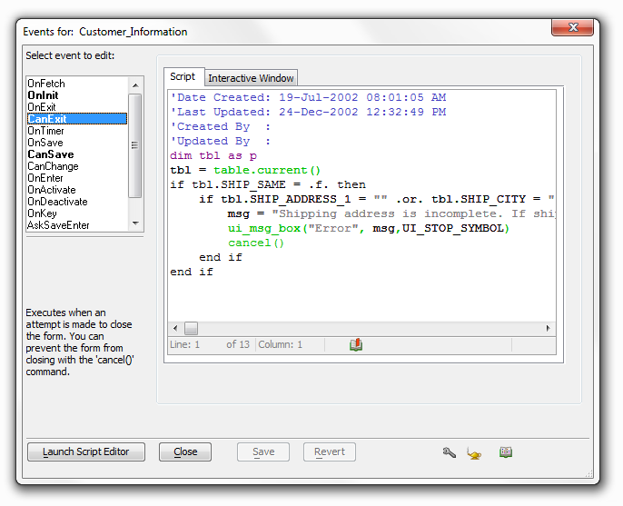

Events For Dialog Box
While designing a form, if you select any form object and click the
 icon, the Events For dialog
box will appear. The left side of the dialog will show all events for
the object. Names in bold indicate events that have scripts attached to
them. Selecting one of these events will display the associated Xbasic
or Action Script code.
icon, the Events For dialog
box will appear. The left side of the dialog will show all events for
the object. Names in bold indicate events that have scripts attached to
them. Selecting one of these events will display the associated Xbasic
or Action Script code.

You can type Xbasic code directly into this window, launch the Xbasic Genie by clicking the icon, or launch the Xbasic Editor or Action Script Genie by clicking the Launch Script Editor button.